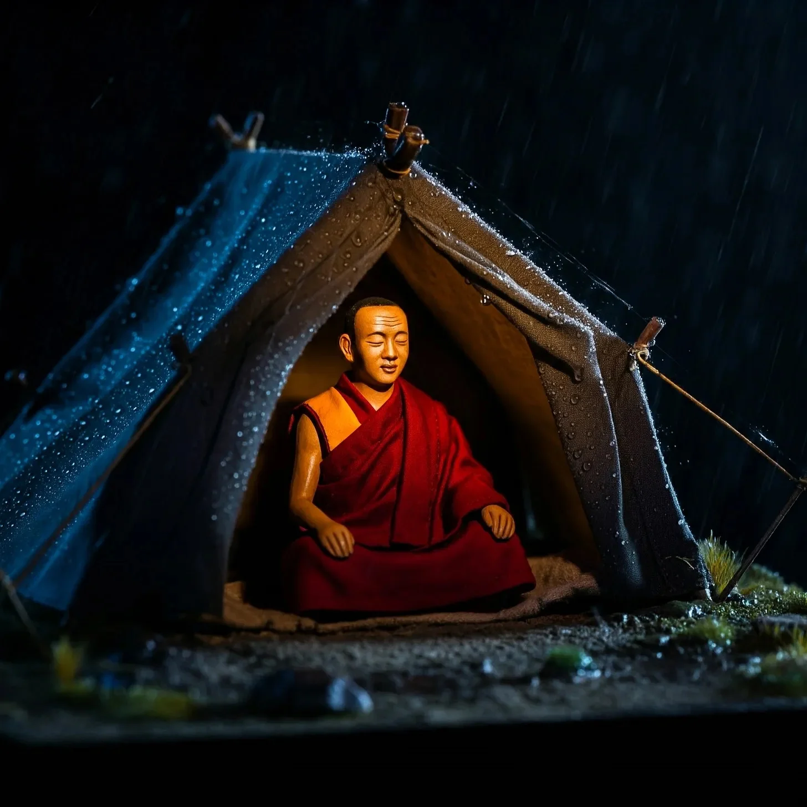

어떤 이들은 깨달음이 번개처럼 온다고 하지만, 그에게는 텐트 천에 떨어지는 빗방울의 규칙적인 리듬으로 찾아왔다. 스님은 방석 위에서 자세를 바로잡으며, 떨어지는 빗방울 하나하나에 맞춰 척추를 정렬했다.
[Some say enlightenment comes like lightning, but for him, it arrived in the steady rhythm of rain on tent fabric. The monk shifted on his cushion, letting his spine align with each pattering drop.]
밖에서는 산이 가을비에 휘감겨 사라졌지만, 텐트 안에서는 모든 빗방울이 작은 전령처럼 도착했다.
[Outside, the mountain disappeared into sheets of autumn rain, but inside the tent, every droplet arrived like a tiny messenger.]
핏-팟-핏. 팟-핏-팟. 첫 한 시간은 순수하게 듣는 것으로 흘러갔다. 명상 스승들은 늘 “그저 관찰하라"고 했고, 그는 그대로 따랐다. 어떤 빗방울은 작은 발자국처럼, 또 어떤 것은 속삭이는 비밀처럼 떨어지는 것을 주시했다.
[Pit-pat-pit. Pat-pit-pat. The first hour passed in pure listening. His meditation teachers had always said, "Just observe,” and he did, noting how some drops landed like tiny feet, others like whispered secrets.]
텐트 천은 각각의 소리를 독특하게 만들어냈다 – 기둥 근처에서는 날카롭게, 처진 가운데에서는 더 부드럽게, 경사진 측면을 따라서는 음악적으로 울렸다.
[The tent canvas shaped each sound uniquely – sharp near the poles, softer in the sagging middle, musical along the sloping sides.]
두 번째 시간에는 교향곡이 더욱 깊어졌다. 그의 호흡은 빗소리의 리듬과 하나가 되었고, 생각과 생각 사이의 공간은 머리 위 하늘처럼 광활해졌다.
[The second hour deepened the symphony. His breathing synchronized with the rainfall’s rhythm, and the space between thoughts grew vast like the sky above.]
그는 비움에 대한 스승의 말씀을 떠올리며 미소 지었다. “비움이라고?” 노스님이 킥킥 웃었었다. “이봐, 네 머리가 너무 비어서 새들이 둥지를 틀 정도가 될 거야!”
[He smiled, remembering his master’s words about reaching emptiness. “Empty?” the old man had cackled. “Hell, you’ll be so empty birds will nest in your head!”]
세 번째 시간이 되자 무언가가 변화했다. 빗방울의 리듬이 무작위한 글자들이 단어로 형태를 갖추듯 패턴을 만들기 시작했다. 핏-팟-핏은 “나와-함께-앉아"가 되었고, 팟-핏-팟은 "거기-있나요?"로 변했다.
[It was during the third hour that something shifted. The rain’s rhythm began forming patterns, like words taking shape from random letters. Pit-pat-pit became "sit-with-me.” Pat-pit-pat transformed into “are-you-there?”]
스님은 눈을 떴다. 산속 공기가 마침내 자신의 뇌를 절였나 싶었다. 하지만 비는 계속해서 수다스럽게 내리고 있었다.
[The monk opened his eyes, wondering if the mountain air had finally pickled his brain. But the rain continued its chatty descent.]
“안-녕-안-녕,” 비가 텐트 천을 두드리며 말했다.
[“Hell-o-hell-o,” it tapped against the canvas.]
그는 약간 우스꽝스러운 기분을 느끼며 목을 가다듬었다. “안녕하세요?”
[He cleared his throat, feeling slightly ridiculous. “Hello?”]
“아-좋아-좋아,” 빗방울들이 대답했다. 각 음절은 완벽한 타악기 소리였다. “네가-언제-알아-차릴지-궁금-했-었-어.”
[“Ah-good-good,” the drops replied, each syllable a perfect percussion. “We-were-won-der-ing-when-you’d-catch-on.”]
스님은 눈을 비볐다. “정신이 나간 게 틀림없어.”
[The monk rubbed his eyes. “I must be losing my mind.”]
“다들-그렇게-말해,” 빗방울이 더 빠르게 춤추며 웃었다. “하지만-어쩌면-넌-그걸-찾고-있는-걸지도.”
[“That’s-what-they-all-say,” the rain laughed, its drops dancing faster. “But-may-be-you’re-find-ing-it.”]
그의 얼굴에 미소가 번졌다. “정말로 나한테 말을 걸고 있는 거예요, 아니면 이건 그저 내면의 지혜를 표현하는 정교한 은유일 뿐인가요?”
[A grin spread across his face. “Are you really talking to me, or is this just an elaborate metaphor for inner wisdom?”]
빗방울들이 텐트 천 위로 흩어지며 웃음소리라고밖에 표현할 수 없는 소리를 냈다. “둘-다-일-수도-있지. 우린-시간이-시작된-이래로-계속-말해-왔어. 하지만-귀-기울이는-이는-거의-없지.”
[The rain scattered across the canvas in what could only be described as a chuckle. “Why-not-both? We-have-been-talk-ing-since-time-be-gan. Few-ev-er-lis-ten.”]
“그런데 왜 하필 나인가요?” 그가 저린 다리를 움직이며 물었다.
[“And why me?” he asked, shifting his cramping legs.]
“왜-안-되겠어?” 비가 대답했다. “넌-충분히-오래-앉아-있었잖아. 대부분의-인간들은-우리를-피해-도망-가지.”
[“Why-not-you?” the rain replied. “You-sat-still-long-en-ough. Most-hu-mans-run-from-us.”]
스님은 고개를 끄덕였다. 얼마나 많이 비를 피해 서둘러 달렸던가, 날씨를 저주하며? 폭풍우를 뚫고 서둘러 가면서 얼마나 많은 대화들을 놓쳤던가?
[The monk nodded, understanding. How many times had he rushed for shelter, cursing the weather? How many conversations had he missed while hurrying through storms?]
“내게 줄 지혜는 무엇인가요?” 그가 반농담조로 물었다.
[“What wisdom do you have for me?” he asked, half-joking.]
“지-혜-라고?” 비가 잠시 멈춘 것 같았다. “우린-그저-친-구-가-되-고-싶-었-을-뿐-이-야.”
[“Wis-dom?” The rain seemed to pause. “We-just-want-ed-some-com-pan-y.”]
스님은 웃음을 터뜨렸고, 그 소리는 빗소리의 리듬과 어우러졌다. 그럴 수밖에 - 깨달음조차도 가끔은 외로움을 느끼는 법이니까. 그들은 밤새도록 이야기를 나눴다, 비와 스님은, 모든 것과 아무것도 아닌 것들에 대해.
[The monk burst out laughing, the sound mixing with the rainfall’s rhythm. Of course – even enlightenment gets lonely sometimes. They talked through the night, the rain and the monk, about everything and nothing.]
구름과 산에 대해, 햇살의 맛과 바람의 춤에 대해. 비는 나뭇잎을 타고 미끄러져 내려와 땅속으로 스며드는 것, 안개가 되어 올라갔다가 눈이 되어 내리는 것에 대해 이야기했다. 스님은 심오한 진리를 찾아 심오한 곳들을 헤매다가 결국 텐트 안에서 비 소리를 들으며 그것을 발견하게 된 자신의 이야기를 들려주었다.
[About clouds and mountains, about the taste of sunshine and the dance of wind. The rain spoke of sliding down leaves and soaking into earth, of rising as mist and falling as snow. The monk shared his own stories of seeking profound truths in profound places, only to find them in a tent, listening to rain.]
동이 틀 무렵, 비가 잦아들기 시작했다. “이제-가-야-해,” 비가 부드럽게 두드렸다.
[“As dawn approached, the rain began to ease. "Time-to-go,” it tapped softly.]
“다시 이야기할 수 있을까요?” 스님이 물었다.
[“Will we talk again?” the monk asked.]
“우린-한-번도-멈춘-적-없-어,” 속삭임으로 사그라지며 대답이 왔다. “그저-듣는-법-을-기억-하-기-만-하-면-돼.”
[“We-nev-er-stopped,” came the reply, fading to a whisper. “Just-re-mem-ber-how-to-lis-ten.”]
해가 뜨면서 마지막 빗방울이 떨어졌고, 스님은 방석과 함께 고요로 가득 찬 텐트에 홀로 남았다. 그는 미소를 지으며 축축한 텐트 천을 만졌다.
[The last drops fell as the sun rose, leaving the monk alone with his cushion and a tent full of silence. He touched the damp canvas, smiling.]